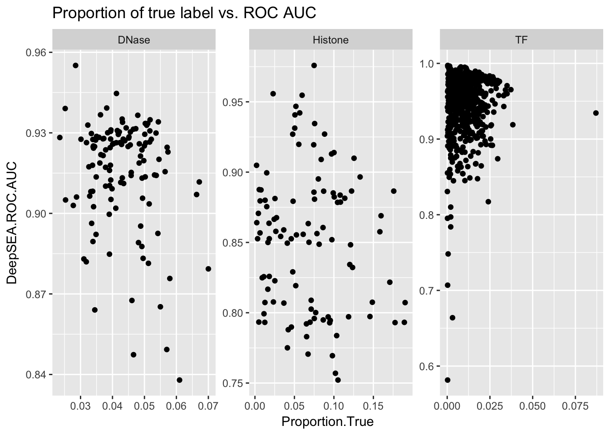

Our data is highly imbalnced.
library(ggplot2)
aucs <- read.table('../data/aucs_informative.txt', sep = '\t', header = T)
temp <- read.table('../data/aucs.txt', sep = '\t', header = T)
temp$DeepSEA.ROC.AUC <- as.numeric(as.character(temp$DeepSEA.ROC.AUC ))## Warning: NAs introduced by coercionaucs$Proportion.True <- read.table('../data/aucs_proportion_of_positive.txt', header = T)[!is.na(temp$DeepSEA.ROC.AUC),]
aucs$Wilcox.pvalue <- read.table('../data/aucs_wilconx_pvalue.txt', header = T)[!is.na(temp$DeepSEA.ROC.AUC),]
ggplot(aucs) + geom_histogram(aes(x = Proportion.True), bins = 20) + facet_wrap(~ AnnotationType, scales = 'free')ggplot(aucs) + geom_point(aes(x = Proportion.True, y = DeepSEA.ROC.AUC)) + facet_wrap(~ AnnotationType, scales = 'free') + ggtitle('Proportion of true label vs. ROC AUC')
ggplot(aucs) + geom_point(aes(x = Proportion.True, y = DeepSEA.PR.AUC)) + facet_wrap(~ AnnotationType, scales = 'free') + ggtitle('Proportion of true label vs. PR AUC')ggplot(aucs) + geom_point(aes(x = Proportion.True, y = -log(Wilcox.pvalue))) + facet_wrap(~ AnnotationType, scales = 'free') + ggtitle('Proportion of true label vs. Wilcox pvalue') + scale_x_sqrt()ggplot(aucs) + geom_point(aes(x = DeepSEA.ROC.AUC, y = -log(Wilcox.pvalue), color = log(Proportion.True))) + facet_wrap(~ AnnotationType, scales = 'free') + ggtitle('ROC AUC vs. Wilcox pvalue') + scale_x_sqrt()ggplot(aucs) + geom_point(aes(x = DeepSEA.PR.AUC, y = -log(Wilcox.pvalue), color = log(Proportion.True))) + facet_wrap(~ AnnotationType, scales = 'free') + ggtitle('PR AUC vs. Wilcox pvalue') + scale_x_sqrt()Both ROC AUC and PR AUC are nonparametric statistics (rank based statistics). Consider a scoring function that tends to distinguish two groups. Then ideally, we want all of the samples in the true group have higher score than the ones in the false group.
Recall that ROC AUC is the area under TPR-FPR curve, where \(FPR = \frac{FP}{F}\) and \(TPR = \frac{TP}{T}\) and this quantity is \(\Pr(score^+ > score^−)\) if \(score^+\) and \(score^−\) are randomly seleted from the two groups. Additionally, PR AUC is the area under Precision-Recall curve, where \(Precision = \frac{TP}{P}\) and \(Recall = \frac{TP}{T}\). If you think of an ordered sequence of balls with two colors (for two groups), every time you separate them into two parts, the purity of the part corresponds to precision and the proportion of a particular color in one part corresponds to the recall value.
Namely Mann–Whitney U test. The null hypothesis is that two group has the same mean. But such null hypothesis may not be of great interest, because we may particularly want to increase sensitivity. It is somehow equivalent to permutation test where we simply permuate group labels.
This site provides a comprehensive simulation analysis on the performance of ROC and PR as a measure of performance of binary classifier. Its results show that PR AUC is more informative than ROC AUC when the data is imbalanced. ROC AUC will stay the same while PR AUC changes dramatically. This is because ROC AUC only tells the property of two conditional distribution \(p(score|y = 1)\) and \(p(score|y = 0)\) but has nothing to do with the number of samples in each category. In our problem setting, however, ROC AUC as a measure is still informative and easy to interprete. This is because at test time the quantity of interest is the difference of \(score(ref)\) and \(score(alt)\). So, we are more interested in the question that how well the scorescore can distinguish two very similar input sequences, in which case there is no imbalanced issue.
Therefore, the main issue caused by imbalanced data in our problem set up is at training phase. If the false labeled samples dominate the likelihood function (or loss function), the model will mainly work on decrease the likelihood or that part and does little on true labeled samples. An alternative loss function is to use hinge loss with weights to handle imbalanced data.
The following example illastrate the limitation of linear classifier, namely it is possible that linear classifier gives ROC AUC smaller than 0.5 under some hard to separate data sets.
generate_wired_data <- function(imbalance_ratio){
nf <- 10000
nt <- nf * imbalance_ratio
temp <- cbind(rnorm(nf), rnorm(nf))
mat <- matrix(c(2, 1, 1, 2), nrow = 2)
false <- temp %*% mat
mix_ratio <- 0.9
temp2 <- cbind(rep(1, nt * mix_ratio), rnorm(nt * mix_ratio), rnorm(nt * mix_ratio))
mat2 <- matrix(c(0.5, 1, 0.5, -0.5, 0.5, 1), ncol = 2)
true_mix <- temp2 %*% mat2
temp3 <- cbind(rep(1, nt * (1 - mix_ratio)), rnorm(nt * (1 - mix_ratio)), rnorm(nt * (1 - mix_ratio)))
mat3 <- matrix(c(-15, 1, 0.5, 15, 0.5, 1), ncol = 2)
true_outlier <- temp3 %*% mat3
data <- list()
data$x1 <- c(false[,1], true_mix[,1], true_outlier[,1])
data$x2 <- c(false[,2], true_mix[,2], true_outlier[,2])
data$label <- c(rep(0, nrow(false)), rep(1, nrow(true_mix)), rep(1, nrow(true_outlier)))
data$sublabel <- c(rep(0, nrow(false)), rep(1, nrow(true_mix)), rep(2, nrow(true_outlier)))
data <- as.data.frame(data)
return(data)
}
data <- generate_wired_data(1)library(precrec)
source('../../../mylib/my_r.R')
fit <- glm(label~x1+x2,data=data,family=binomial())
summary(fit)##
## Call:
## glm(formula = label ~ x1 + x2, family = binomial(), data = data)
##
## Deviance Residuals:
## Min 1Q Median 3Q Max
## -1.306 -1.159 -1.046 1.217 1.286
##
## Coefficients:
## Estimate Std. Error z value Pr(>|z|)
## (Intercept) -0.043702 0.014358 -3.044 0.00234 **
## x1 -0.049400 0.005018 -9.844 < 2e-16 ***
## x2 0.058493 0.005037 11.612 < 2e-16 ***
## ---
## Signif. codes: 0 '***' 0.001 '**' 0.01 '*' 0.05 '.' 0.1 ' ' 1
##
## (Dispersion parameter for binomial family taken to be 1)
##
## Null deviance: 27725 on 19998 degrees of freedom
## Residual deviance: 27210 on 19996 degrees of freedom
## AIC: 27216
##
## Number of Fisher Scoring iterations: 3ggplot(data) + geom_point(aes(x = x1, y = x2, color = factor(label))) + ggtitle('Simulated data') + geom_abline(intercept = -fit$coefficients[1]/fit$coefficients[3], slope = -fit$coefficients[2]/fit$coefficients[3])y_pred <- predict(fit, type="response")
sscurves <- evalmod(scores = y_pred, labels = data$label)
plot(sscurves)report <- list()
report$measure <- c('ROC AUC', 'PR AUC', 'Accuracy', 'Precision.T', 'Precision.F', 'Recall.T', 'Recall.F', 'Proportion.T', 'Proportion.F')
report$value <- c(auc(sscurves)$aucs, accuracy(data$label, y_pred), precision.t(data$label, y_pred), precision.f(data$label, y_pred), recall.t(data$label, y_pred), recall.f(data$label, y_pred), proportion.t(data$label), proportion.f(data$label))
print(as.data.frame(report))## measure value
## 1 ROC AUC 0.3406749
## 2 PR AUC 0.4625028
## 3 Accuracy 0.4034202
## 4 Precision.T 0.2600596
## 5 Precision.F 0.4395542
## 6 Recall.T 0.1047105
## 7 Recall.F 0.7021000
## 8 Proportion.T 0.4999750
## 9 Proportion.F 0.5000250From the simulation you can see, if the feature space does not have enough distinguish power, the linear classifier will behave poorly (in term of ROC AUC) no matter whether the data set is imbalanced or not But it is good to note that imbalanced data set gives some misleadingly good results. For instance:
data <- generate_wired_data(0.02)
fit <- glm(label~x1+x2,data=data,family=binomial())
summary(fit)##
## Call:
## glm(formula = label ~ x1 + x2, family = binomial(), data = data)
##
## Deviance Residuals:
## Min 1Q Median 3Q Max
## -0.2859 -0.2046 -0.1909 -0.1779 2.9596
##
## Coefficients:
## Estimate Std. Error z value Pr(>|z|)
## (Intercept) -3.99058 0.07432 -53.698 < 2e-16 ***
## x1 -0.15171 0.02282 -6.647 2.98e-11 ***
## x2 0.13449 0.02316 5.806 6.40e-09 ***
## ---
## Signif. codes: 0 '***' 0.001 '**' 0.01 '*' 0.05 '.' 0.1 ' ' 1
##
## (Dispersion parameter for binomial family taken to be 1)
##
## Null deviance: 1960.9 on 10198 degrees of freedom
## Residual deviance: 1891.6 on 10196 degrees of freedom
## AIC: 1897.6
##
## Number of Fisher Scoring iterations: 6ggplot(data) + geom_point(aes(x = x1, y = x2, color = factor(label))) + ggtitle('Simulated data') + geom_abline(intercept = -fit$coefficients[1]/fit$coefficients[3], slope = -fit$coefficients[2]/fit$coefficients[3])y_pred <- predict(fit, type="response")
sscurves <- evalmod(scores = y_pred, labels = data$label)
plot(sscurves)report <- list()
report$measure <- c('ROC AUC', 'PR AUC', 'Accuracy', 'Precision.T', 'Precision.F', 'Recall.T', 'Recall.F', 'Proportion.T', 'Proportion.F')
report$value <- c(auc(sscurves)$aucs, accuracy(data$label, y_pred), precision.t(data$label, y_pred), precision.f(data$label, y_pred), recall.t(data$label, y_pred), recall.f(data$label, y_pred), proportion.t(data$label), proportion.f(data$label))
print(as.data.frame(report))## measure value
## 1 ROC AUC 0.32399196
## 2 PR AUC 0.10772808
## 3 Accuracy 0.98235121
## 4 Precision.T 1.00000000
## 5 Precision.F 0.98231827
## 6 Recall.T 0.09547739
## 7 Recall.F 1.00000000
## 8 Proportion.T 0.01951172
## 9 Proportion.F 0.98048828Even if PR AUC decreases, the distinguish power or relative rank of the score remains equally good as the balanced case.
Here we show the performance of two loss functions on a simulated sequence data set. The goal is to see if it can improve the performance under the same number of iterations.